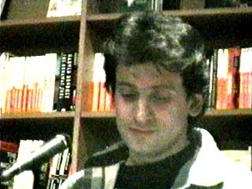

An Evening at Biblio's
On Valentine's Day, Meg Wise-Lawrenceand I hosted a fiction/poetry
reading of Web writers at Biblio's
cafe/bookstore in downtown Manhattan.
The agenda was pretty loose -- we'd
selected an eclectic group of thirteen
readers from various places on the
internet, and we'd given no instructions
except to keep it to under ten minutes.
It turned out to be a great night! First ...

Meg Wise-Lawrence (aka
The oMEGa Female,
whose work has also appeared in
Enterzone
and
Literary Kicks)
kicked off the evening with a
short spoken-word performance. I then pulled
out my guitar and joined her for an homage to
Patti Smith which had been inspired by a passage
Meg had read one night in a physics textbook.

Ted Fristrom read a short story, Space,
which first appeared in
Jamie's Amateur Fiction Hour
Dave Kushner, who is a part of
Sonic Net
and has also been published in
Alt-X
read a piece he'd written for Details
magazine about his experimental cross-gender
experiences on the Net.
Peter Crumlish read a story, The Last to
Know, that recently appeared in Enterzone.
Clay Shirky, author of the book Voices of the
Web and frequent contributor to webzines like
Urban Desires and
Word
performed an interesting hypertext piece,
Notes on Sinking, by mixing up a bunch
of index cards and reading them at random.
Maureen McClarnon, whose work has appeared in
the
io
section of
Alt-X,
read a few short poems.
Phil Zampino
and friends
Will Perez
and Dominique
Cocuzza presented a pretty wild Alfred-Jarry-esque
playlet, complete with props, drums and mask.
Ben Cohen,
who runs the io section of Alt-X,
read a couple of pieces, assisted by
his friend Mary.
Galinsky, producer of
Pseudo and
host of its "GO POETRY" venue,
is a real panic. He does energetic, warmly
humorous spoken-word bits about everyday life in New
York City, growing up, being a teacher in Brooklyn ...
if you ever get a chance to see him perform, don't
miss it.
David Alexander read a short story, Shock of
a Feather, about a siamese twin. David's stories
have appeared in Enterzone.
Nicole Blackman, a Dorothy Parker for the 90's,
told us horrifying truths about Alanis Morissette
(published in Sonic Net) and read a piece about
traveling with an all-male rock band.
Jamie Fristrom (who runs Jamie's Amateur Fiction Hour,
and who I hope will someday earn enough
money with his excellent writing that he won't have to
code video games in San Diego anymore) read a story
about a guy who codes video games in San Diego.

I closed the evening with my story, Snappers,
from my
Queensboro Ballads
web project.
The evening went really nicely, and I'd like to thank
everyone who helped make it happen. Meg and I put this
thing together because we wanted to start a trend. We'll
see if it worked ...
(Thanks to Tony Leotta for taking the videos I used to get these pictures.)